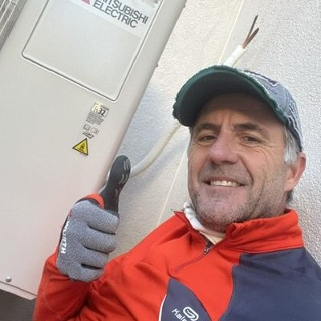
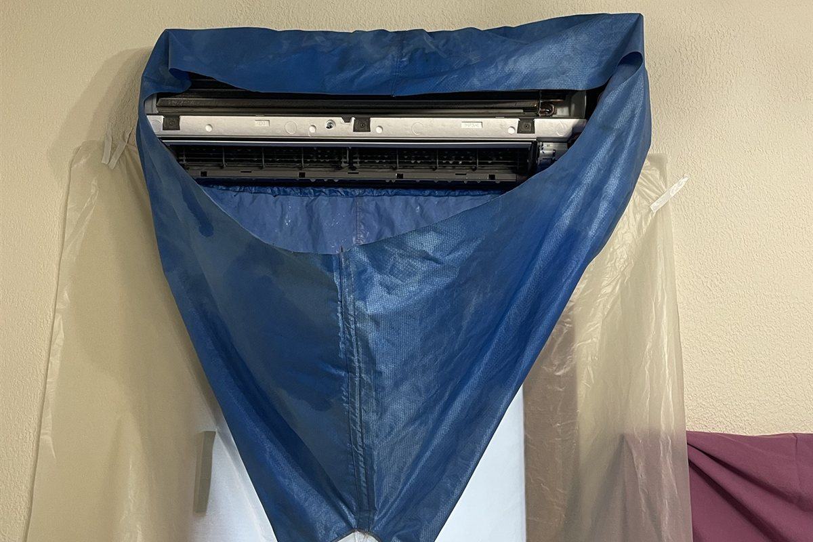
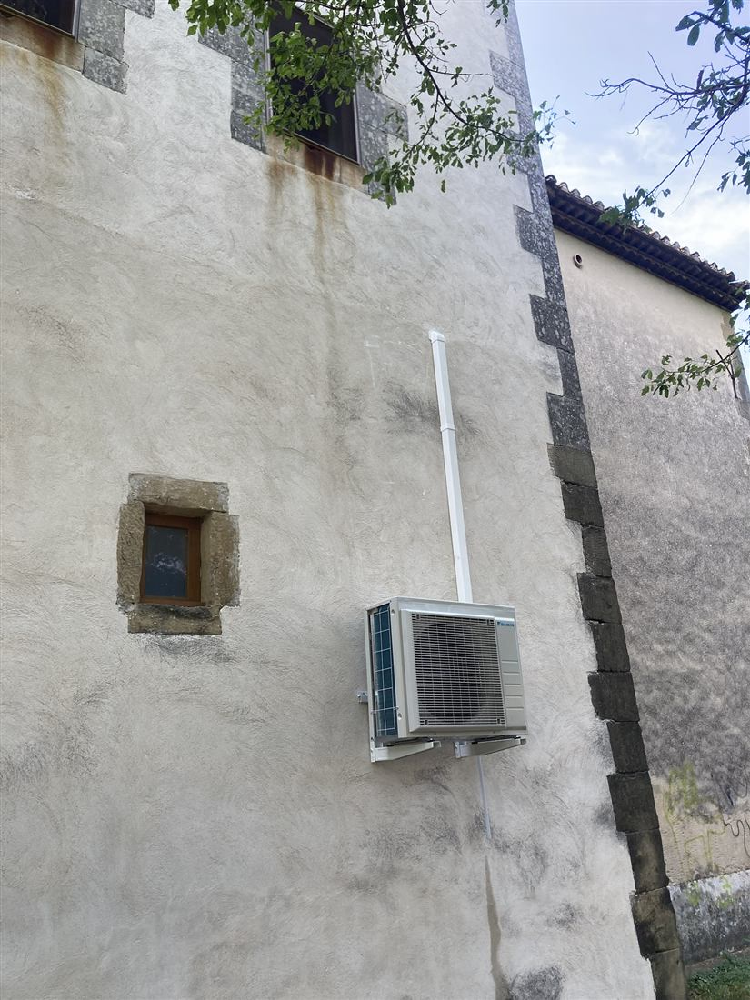
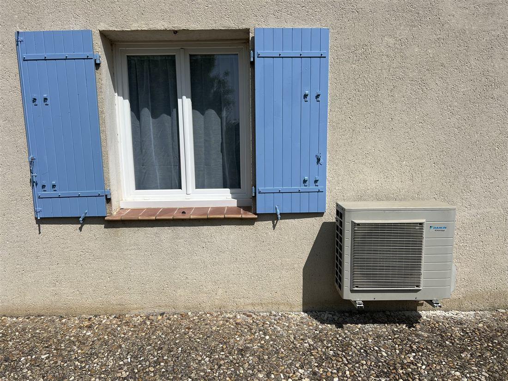
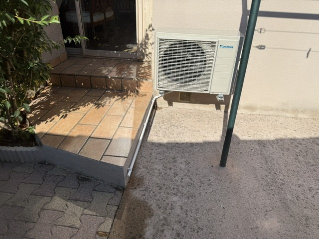
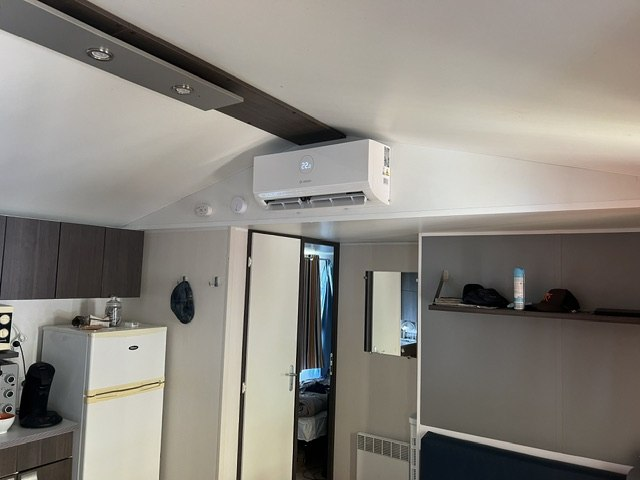
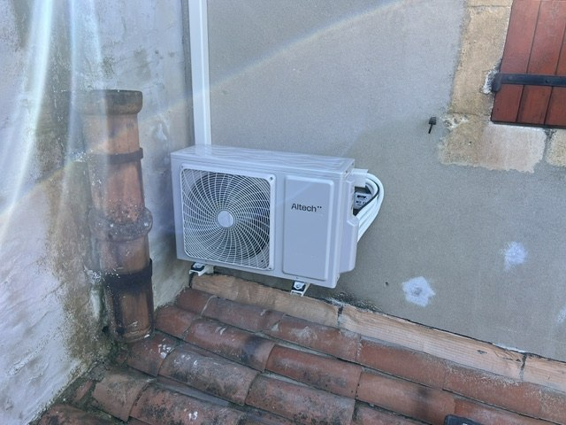

Climatisation et chauffage à Eyguières et dans les Alpilles
Thierry pose, entretient et dépanne votre climatisation réversible, d'Eyguières à Saint-Rémy, Cavaillon et Châteaurenard. Vous appelez, c'est lui qui décroche et qui vient chez vous.
- Devis gratuit, sans engagement
- Installation garantie 2 ans
- Rappel dans la journée

Demander un devis
Répondez à 4 questions, Thierry vous rappelle dans la journée pour fixer la visite. Pour une panne, le plus rapide reste le téléphone.

Thierry, climaticien à Eyguières
Joignable du lundi au vendredi, de 8h à 19h
- Visite chez vousavant tout devis, pour la bonne puissance
- Certifié fluidesattestation d'aptitude catégorie I
- Garantie 2 anssur l'installation
Ce que fait Thierry

Installation
Clim réversible murale, multisplit pour plusieurs pièces, console, gainable. Elle rafraîchit l'été et chauffe l'hiver.
Faire poser une clim ›
Entretien
Nettoyage complet des unités intérieures et du groupe extérieur, contrôles, conseils. Une clim propre consomme moins et dure plus longtemps.
Faire entretenir sa clim ›
Dépannage
La clim ne chauffe plus, coule, affiche un code ou fait du bruit : diagnostic, puis réparation avec un prix annoncé avant.
Clim en panne ›Pourquoi les gens du coin l'appellent
- Un seul interlocuteurCelui qui fait la visite est celui qui pose, met en service et revient pour l'entretien.
- La bonne puissance, pas la plus grosseSurface, isolation, exposition au mistral ou au plein sud : l'appareil est choisi pour votre maison.
- Une pose propreLiaisons courtes, goulottes discrètes, groupe calé contre les vibrations, chantier nettoyé avant de partir.
- Toujours joignable aprèsUne question l'hiver, un code erreur l'été : vous rappelez le même numéro.
Combien coûte une clim posée ?
Le prix juste dépend de votre maison. Plutôt qu'un tarif au hasard, vous recevez un prix écrit après la visite, sans engagement.
Des chantiers du secteur
Des poses réelles de Thierry, photographiées sur le chantier.







Où intervient Mister Climat
Autour d'Eyguières, dans un rayon d'environ 25 km : les Alpilles, la Durance, le pays de Cavaillon et le nord vers Châteaurenard.
Eyguières
Le village de l'entreprise, avec Lamanon, Aureille et Sénas.
Voir la page ›Saint-Rémy et les Alpilles
Saint-Rémy, Eygalières, Maussane, Mouriès, Les Baux, Paradou, Fontvieille, Saint-Martin-de-Crau.
Voir la page ›Cavaillon et la Durance
Cavaillon, Cheval-Blanc, Orgon, Plan-d'Orgon, Taillades, Robion, Mérindol, L'Isle-sur-la-Sorgue.
Voir la page ›Châteaurenard et le nord
Châteaurenard, Noves, Cabannes, Saint-Andiol, Mollégès, Eyragues, Maillane, Graveson.
Voir la page ›Les questions qu'on nous pose
Une clim réversible chauffe-t-elle vraiment l'hiver ?
Oui. C'est une pompe à chaleur air-air : elle prend les calories de l'air extérieur pour chauffer la pièce, et consomme bien moins qu'un radiateur électrique pour la même chaleur. Avec la bonne puissance, elle suffit pour chauffer une maison de la région.
Une clim, est-ce que ça fait du bruit ?
Cela dépend du modèle choisi. En général, une unité intérieure récente ne dépasse pas 30 décibels en petite vitesse : c'est le niveau d'un chuchotement, ou d'une chambre calme la nuit. Le groupe extérieur est discret lui aussi : à quelques mètres, son bruit est proche de celui d'un réfrigérateur. Thierry le pose loin des chambres et des fenêtres des voisins, sur un support qui ne transmet pas les vibrations au mur.
Tous les combien faut-il entretenir sa clim ?
Les filtres se nettoient plusieurs fois par an, vous pouvez le faire vous-même. Un nettoyage complet par un professionnel se fait en général une fois par an. Au-delà de 4 kW, un contrôle par un professionnel est obligatoire tous les deux ans.
Combien de temps faut-il pour une pose ?
Une clim murale dans une pièce se pose en général dans la journée. Pour plusieurs pièces, la durée est indiquée sur le devis.
Un projet, une panne, une question ?
Le plus rapide reste le téléphone. Sinon, laissez votre numéro, vous êtes rappelé.